車の中には、木質ペレットを燃やすピザ窯を据えつけました。庫内は400℃。ご注文をいただいてから、一枚ずつ焼き上げております。
生地は独自の配合で薄くのばし、一度下焼きをしております。サクサクとした食感を大事にした、耳までおいしいクラストです。
この一台を、夫婦ふたりでやっております。お店の家賃も人件費もかけずにやっておりますので、この値段でお出しできます。おいしいものを、気軽に召し上がっていただきたいと思っております。
栃木県野木町・ピザお持ち帰り専門店
イタリア色の車窓から、
とろけるピザをお手元に。
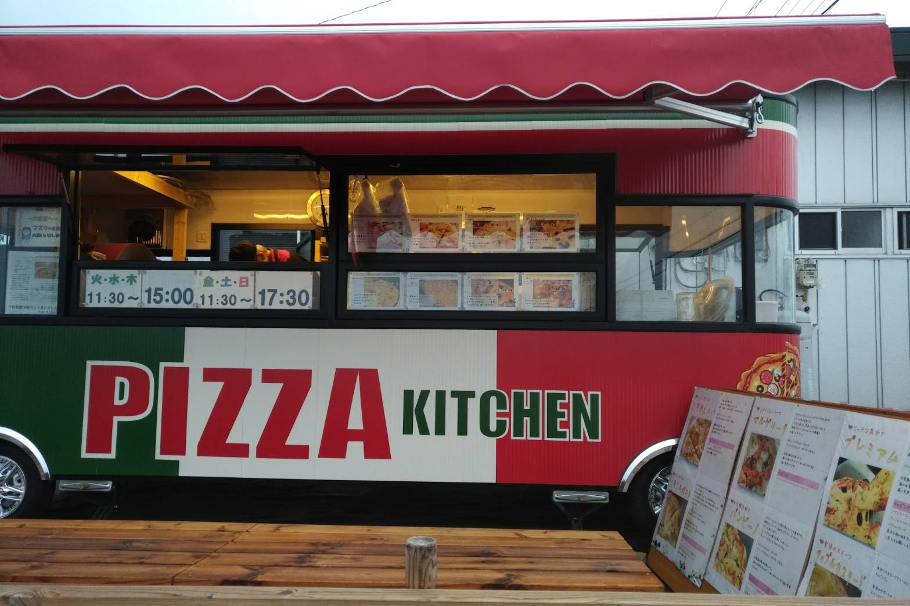
400℃の窯を積んだ一台で、ピザを焼いております。スタンダードピザ9種は、どれも6インチ500円から。ご注文をいただいてから一枚ずつ焼き上げ、焼きたてを窓口でお渡しします。
営業時間｜火・水・木 11:30〜15:00 ／ 金・土・日 11:30〜17:30 ／ 月曜定休
お知らせ かき氷、やっております。手作りの氷みつで、コーヒーやトマトなど全6種をご用意しております。ミントアイスも、ミントの採れるこの季節だけのお出しです。 2026年8月
400℃の窯
車の中には、木質ペレットを燃やすピザ窯を据えつけました。庫内は400℃。ご注文をいただいてから、一枚ずつ焼き上げております。
生地は独自の配合で薄くのばし、一度下焼きをしております。サクサクとした食感を大事にした、耳までおいしいクラストです。
この一台を、夫婦ふたりでやっております。お店の家賃も人件費もかけずにやっておりますので、この値段でお出しできます。おいしいものを、気軽に召し上がっていただきたいと思っております。
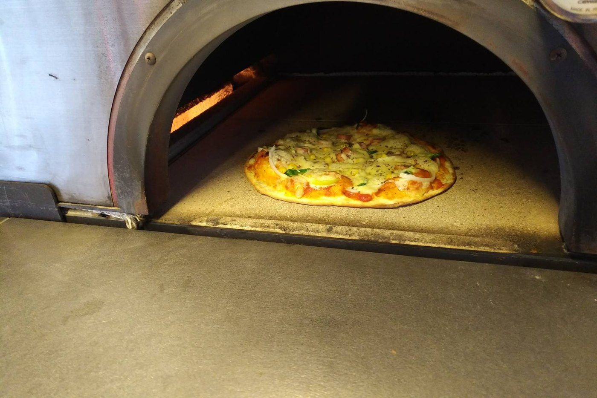
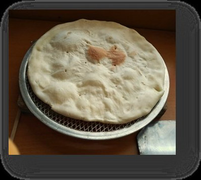
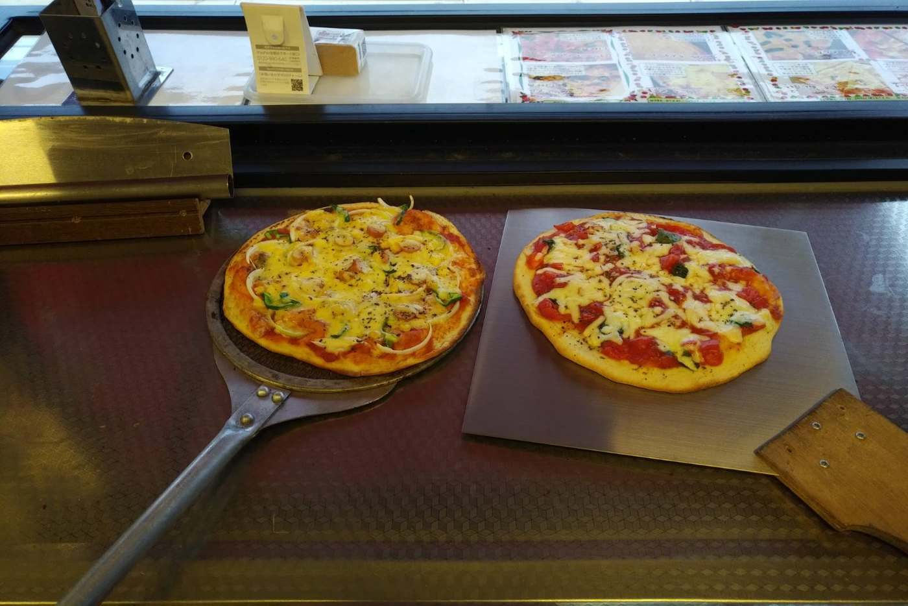
材料のこと
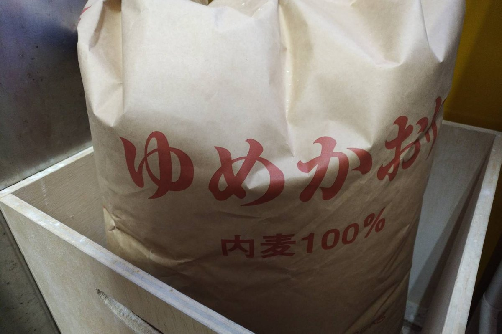
安心安全な国産小麦粉「ゆめかおり」を使っております。
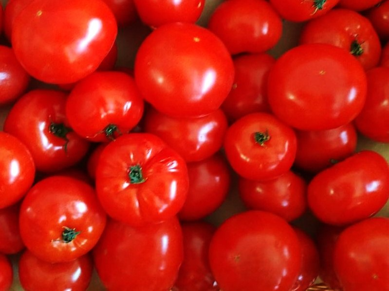
地元の農園と提携しております。水を少なく与え、収穫量は減っても濃い味を追い求めたトマトです。
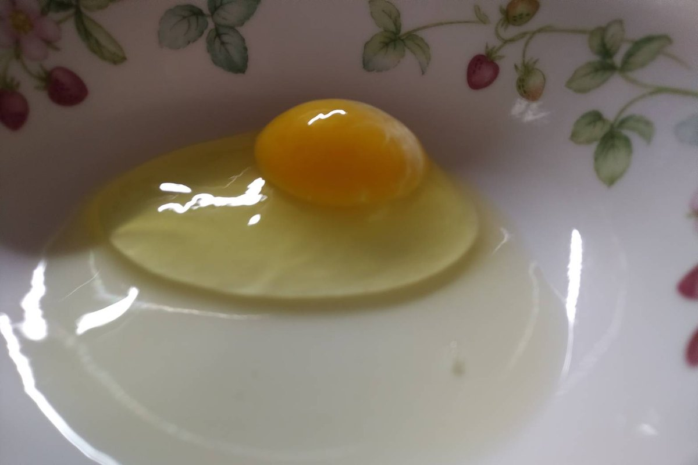
黄身も白身も立っている卵です。プリン・カスタード、明太ソース用のマヨネーズの材料に使っております。
新築に使われる新しい木の端材を松やにで固めた燃料です。燃やして出る二酸化炭素は自然に還ります。容器は紙皿、袋はバイオマス配合率の高いものを使っております。
お客様の声
ここに来る楽しみが増えた80代 男性／お客様の声より
うちの子（4歳の女の子）は、ピザいつも残すのに、今日は10インチを1枚全部食べちゃいました。30代 女性／お客様の声より
トマトソースのトマトの角が立っていて、おいしかったです20代 女性／お客様の声より
ご注文とお受け取り
STEP 1
お名前・お受け取りの時間・ピザの名前とサイズをお伝えください。ご注文のお電話は、営業時間内（火〜木 11:30〜15:00／金〜日 11:30〜17:30）に承ります。
STEP 2
お待ちいただく間、ウエルカムドリンクをお出ししております。季節に応じてトマトジュース・青じそジュース・ミントウォーター・温かいトマトスープをご用意しております。
STEP 3
キッチンカーの窓口でお渡しします。お持ち帰り専門ですので、店内のお席はございません。お車の中やご自宅で、あたたかいうちに召し上がってください。
お電話をいただかなくても、窓口で直接ご注文いただけます。焼き上がりまで、ベンチにおかけになってお待ちください。
グラッチェは「ありがとう」、カルタは「カード」。500円につきスタンプを1個お押しします（端数は切り捨てとなります）。1枚たまりましたら、スイーツ3個とお取り替えいたします。有効期限はございません。
野木町消防団応援キャンペーンを実施しております。団員カードをお持ちの方は、ご注文の際にご提示ください。
現金のほか、PayPay・電子マネー・野木町プレミアムチケットがご利用いただけます。クレジットカードはご利用いただけません。
野木町のふるさと納税の返礼品に、当店の冷凍ピザ（20cm・4枚セット）をお選びいただけます。ご自宅で焼いて召し上がっていただけます。
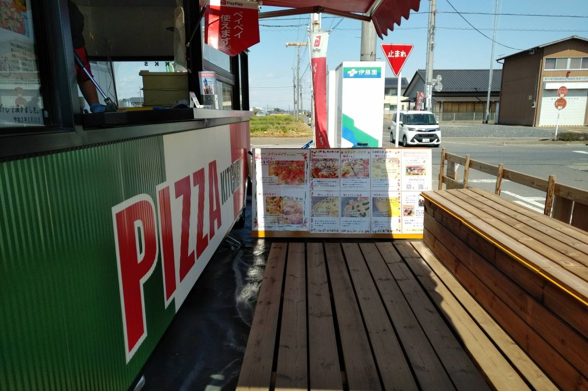
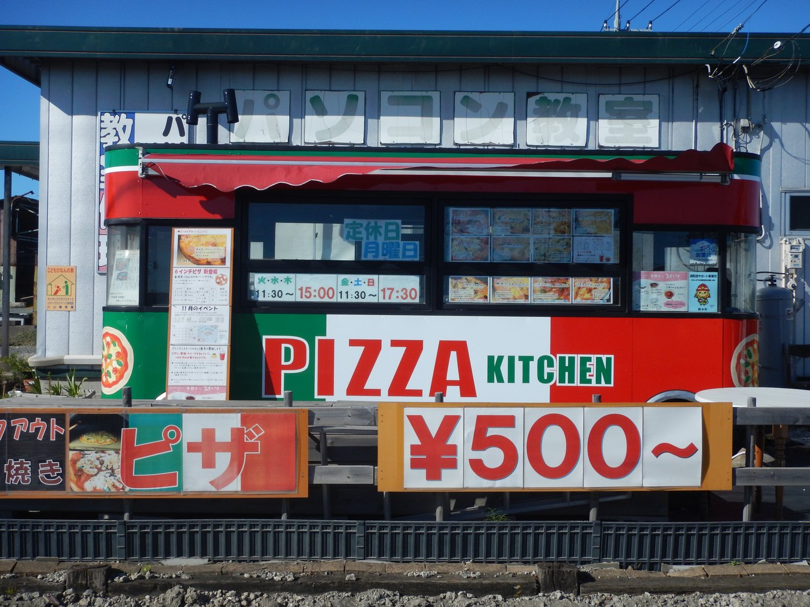
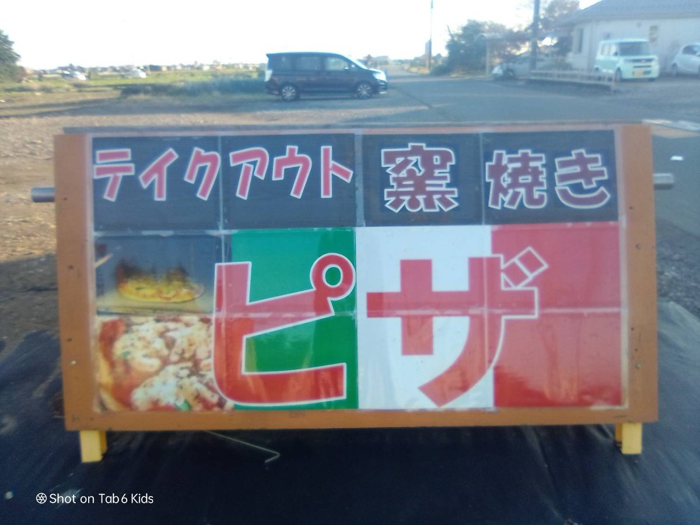
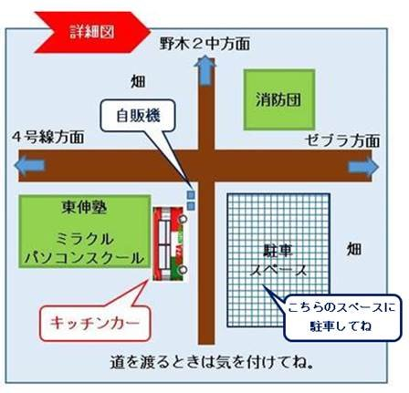
| 住所 | 〒329-0114 栃木県下都賀郡野木町野木544 |
|---|---|
| 電話 | 090-9961-0141 |
| 営業時間 | 火・水・木 11:30〜15:00 金・土・日 11:30〜17:30 |
| 定休日 | 月曜日 |
| ご利用 | お持ち帰り専門（店内のお席はございません） |
| 駐車場 | 18台（道路の反対側。東伸塾・ミラクルパソコンスクール野木校との共同の駐車場です） |
| お支払い | 現金・PayPay・電子マネー・野木町プレミアムチケット（クレジットカードはご利用いただけません） |
| @pizzakitchen.nogi（かき氷やお休みのお知らせは、こちらでもお伝えしております） | |
| 開業 | 2020年11月25日 |
最寄り駅は野木駅（西口）と古河駅です。野木第2中学校の正門前から南へ、歩いて10分ほど。国道4号線からは東へ約160mです。
駐車場は道路をはさんだ反対側にございます。細い道で、交通量の多い時間帯もございます。道路に停めてのお買い物は危険ですので、必ず駐車場をご利用ください。お渡りになる際は、特にお子様連れの方はお気をつけください。